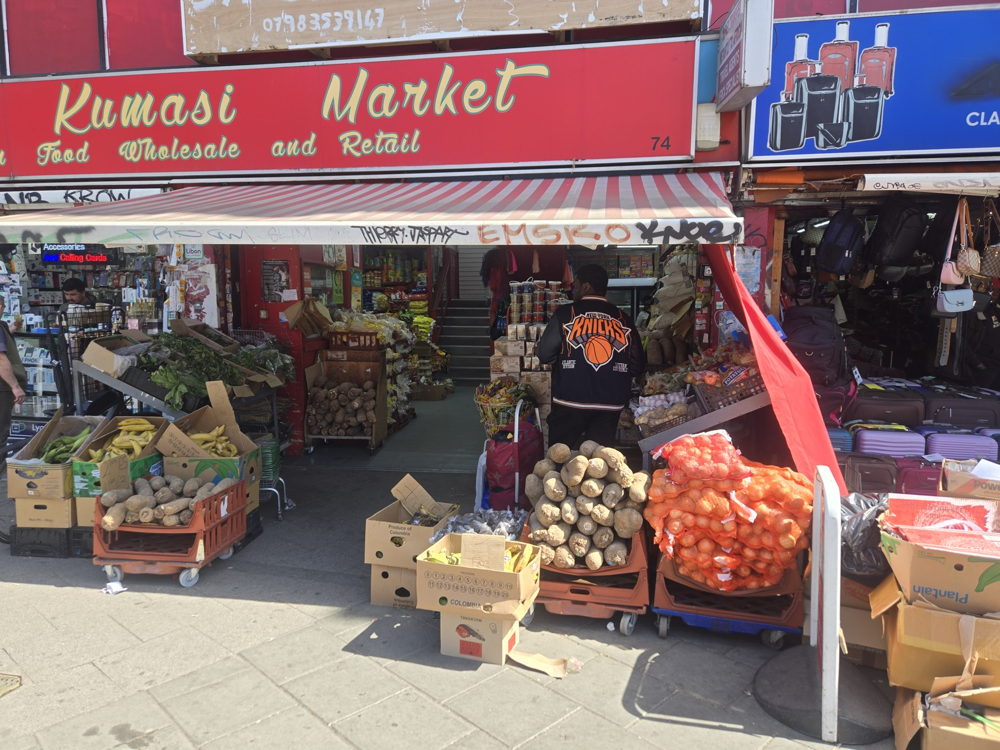

SHOPFRONT PHOTO
Kumasi Market
A starting point for looking at how a shop presents itself to the street. What would the people working here want visitors to know?
Photographed location: 74 Peckham High Street, near Rye Lane.01 / FIND YOUR WAY IN
Choose a scene. Look around.
See what catches your eye.
Drawings and photographs by Caiyi Jiang. Select any scene to explore its details.
SHOPS & NEIGHBOURS / A PHOTO NOTEBOOK
Start with the places we can see. The people, their work and their own stories are the next part of the picture.

SHOPFRONT PHOTO
A starting point for looking at how a shop presents itself to the street. What would the people working here want visitors to know?
Photographed location: 74 Peckham High Street, near Rye Lane.
CAFÉ INTERVIEW
Look beyond the window and hear a conversation recorded at the café.
Read more & watch the interviewThis page currently contains photographs and questions, rather than interviews. Business owners and staff should be able to describe their own work and correct how it is represented.
Prepare an introduction or correction